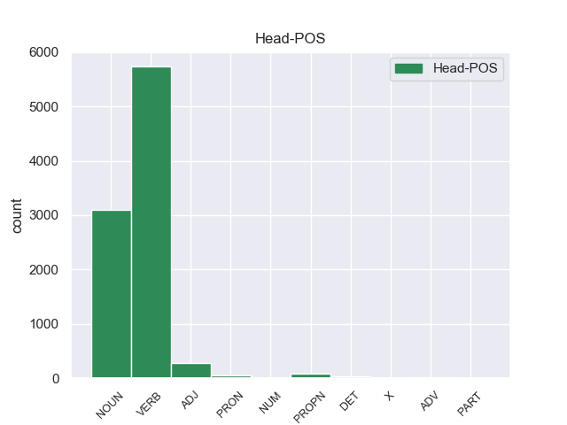
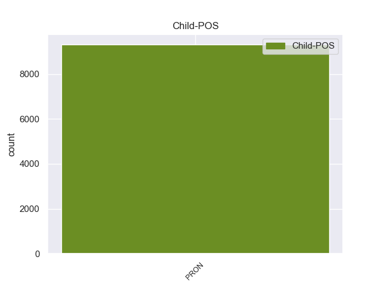

Distribution of features within this leaf



Morphosyntax Rules sorted by frequency.
- When the dependent token is the nominal subject(nsubj) of the head token, and the head token is VERB and the dependent token is PRON, the Case needs to be Nom.
1 मैं मैं PRON PRP Case=Nom|Number=Sing|Person=1|PronType=Prs 5 nsubj _ ChunkId=NP|ChunkType=head|Tam=0|Translit=maiṁ|Vib=0
2 स्पष्ट _ _ _ _ 0 _ _ _
3 कर _ _ _ _ 0 _ _ _
4 देना _ _ _ _ 0 _ _ _
5 चाहता चाह VERB VM Aspect=Imp|Gender=Masc|Number=Sing|Person=1|VerbForm=Part|Voice=Act 0 _ _ _
6 हूं _ _ _ _ 0 _ _ _
7 कि _ _ _ _ 0 _ _ _
8 मेरा _ _ _ _ 0 _ _ _
9 दृष्टिकोण _ _ _ _ 0 _ _ _
10 अलगाववादी _ _ _ _ 0 _ _ _
11 नहीं _ _ _ _ 0 _ _ _
12 है _ _ _ _ 0 _ _ _
13 । _ _ _ _ 0 _ _ _
1 उन्होंने _ _ _ _ 0 _ _ _
2 यहां यहाँ PRON PRP Case=Nom|PronType=Prs 22 obl _ ChunkId=NP2|ChunkType=head|Translit=yahāṁ
3 वेटिकन _ _ _ _ 0 _ _ _
4 दूतावास _ _ _ _ 0 _ _ _
5 में _ _ _ _ 0 _ _ _
6 एक _ _ _ _ 0 _ _ _
7 शोक _ _ _ _ 0 _ _ _
8 पुस्तिका _ _ _ _ 0 _ _ _
9 पर _ _ _ _ 0 _ _ _
10 हस्ताक्षर _ _ _ _ 0 _ _ _
11 कर _ _ _ _ 0 _ _ _
12 पोप _ _ _ _ 0 _ _ _
13 जॉन _ _ _ _ 0 _ _ _
14 पॉल _ _ _ _ 0 _ _ _
15 द्वितीय _ _ _ _ 0 _ _ _
16 के _ _ _ _ 0 _ _ _
17 निधन _ _ _ _ 0 _ _ _
18 पर _ _ _ _ 0 _ _ _
19 गहरा _ _ _ _ 0 _ _ _
20 दुख _ _ _ _ 0 _ _ _
21 प्रकट _ _ _ _ 0 _ _ _
22 किया कर VERB VM Aspect=Perf|Gender=Masc|Number=Sing|VerbForm=Part|Voice=Act 0 _ _ _
23 । _ _ _ _ 0 _ _ _
1 चीनी _ _ _ _ 0 _ _ _
2 प्रधानमंत्री _ _ _ _ 0 _ _ _
3 वेन _ _ _ _ 0 _ _ _
4 जियाबाओ _ _ _ _ 0 _ _ _
5 की _ _ _ _ 0 _ _ _
6 भारत _ _ _ _ 0 _ _ _
7 यात्रा _ _ _ _ 0 _ _ _
8 से _ _ _ _ 0 _ _ _
9 पहले _ _ _ _ 0 _ _ _
10 निर्वासित _ _ _ _ 0 _ _ _
11 तिब्बती _ _ _ _ 0 _ _ _
12 आध्यात्मिक _ _ _ _ 0 _ _ _
13 नेता _ _ _ _ 0 _ _ _
14 दलाई _ _ _ _ 0 _ _ _
15 लामा _ _ _ _ 0 _ _ _
16 ने _ _ _ _ 0 _ _ _
17 कहा _ _ _ _ 0 _ _ _
18 है _ _ _ _ 0 _ _ _
19 कि _ _ _ _ 0 _ _ _
20 चीनी _ _ _ _ 0 _ _ _
21 और _ _ _ _ 0 _ _ _
22 तिब्बती _ _ _ _ 0 _ _ _
23 एक एक PRON PRPC Case=Nom|Number=Sing|Person=3|PronType=Prs 28 nmod _ ChunkId=NP5|ChunkType=child|Tam=0|Translit=eka|Vib=0
24 - _ _ _ _ 0 _ _ _
25 दूसरे _ _ _ _ 0 _ _ _
26 की _ _ _ _ 0 _ _ _
27 सांस्कृतिक _ _ _ _ 0 _ _ _
28 विशिष्टता विशिष्टता NOUN NN Case=Acc|Gender=Fem|Number=Sing|Person=3 0 _ _ _
29 का _ _ _ _ 0 _ _ _
30 आदर _ _ _ _ 0 _ _ _
31 करते _ _ _ _ 0 _ _ _
32 हैं _ _ _ _ 0 _ _ _
33 । _ _ _ _ 0 _ _ _
1 मैं मैं PRON PRP Case=Nom|Number=Sing|Person=1|PronType=Prs 14 nsubj _ ChunkId=NP|ChunkType=head|Tam=0|Translit=maiṁ|Vib=0
2 चीनी _ _ _ _ 0 _ _ _
3 संविधान _ _ _ _ 0 _ _ _
4 के _ _ _ _ 0 _ _ _
5 तहत _ _ _ _ 0 _ _ _
6 ही _ _ _ _ 0 _ _ _
7 तिब्बती _ _ _ _ 0 _ _ _
8 समस्या _ _ _ _ 0 _ _ _
9 का _ _ _ _ 0 _ _ _
10 समाधान _ _ _ _ 0 _ _ _
11 निकाले _ _ _ _ 0 _ _ _
12 जाने _ _ _ _ 0 _ _ _
13 के _ _ _ _ 0 _ _ _
14 पक्ष पक्ष NOUN NN Case=Acc|Gender=Masc|Number=Sing|Person=3 0 _ _ _
15 में _ _ _ _ 0 _ _ _
16 हूं _ _ _ _ 0 _ _ _
17 । _ _ _ _ 0 _ _ _
1 अल्पसंख्यक _ _ _ _ 0 _ _ _
2 आयोग _ _ _ _ 0 _ _ _
3 के _ _ _ _ 0 _ _ _
4 अध्यक्ष _ _ _ _ 0 _ _ _
5 तिरलोचन _ _ _ _ 0 _ _ _
6 सिंह _ _ _ _ 0 _ _ _
7 कहते _ _ _ _ 0 _ _ _
8 हैं _ _ _ _ 0 _ _ _
9 कि _ _ _ _ 0 _ _ _
10 यह यह PRON PRP Case=Nom|Number=Sing|Person=3|PronType=Prs 11 nsubj _ ChunkId=NP4|ChunkType=head|Tam=0|Translit=yaha|Vib=0
11 सही सही ADJ JJ _ 0 _ _ _
12 है _ _ _ _ 0 _ _ _
13 कि _ _ _ _ 0 _ _ _
14 बौद्ध _ _ _ _ 0 _ _ _
15 धर्म _ _ _ _ 0 _ _ _
16 हिंदुस्तान _ _ _ _ 0 _ _ _
17 का _ _ _ _ 0 _ _ _
18 एक _ _ _ _ 0 _ _ _
19 पुरातन _ _ _ _ 0 _ _ _
20 धर्म _ _ _ _ 0 _ _ _
21 है _ _ _ _ 0 _ _ _
22 और _ _ _ _ 0 _ _ _
23 इसके _ _ _ _ 0 _ _ _
24 अनुयायियों _ _ _ _ 0 _ _ _
25 की _ _ _ _ 0 _ _ _
26 संख्या _ _ _ _ 0 _ _ _
27 काफी _ _ _ _ 0 _ _ _
28 तेजी _ _ _ _ 0 _ _ _
29 से _ _ _ _ 0 _ _ _
30 बढ़ _ _ _ _ 0 _ _ _
31 रही _ _ _ _ 0 _ _ _
32 है _ _ _ _ 0 _ _ _
33 लेकिन _ _ _ _ 0 _ _ _
34 अफसोस _ _ _ _ 0 _ _ _
35 की _ _ _ _ 0 _ _ _
36 बात _ _ _ _ 0 _ _ _
37 है _ _ _ _ 0 _ _ _
38 कि _ _ _ _ 0 _ _ _
39 उनके _ _ _ _ 0 _ _ _
40 शिक्षा _ _ _ _ 0 _ _ _
41 , _ _ _ _ 0 _ _ _
42 स्वास्थ्य _ _ _ _ 0 _ _ _
43 , _ _ _ _ 0 _ _ _
44 सामाजिक _ _ _ _ 0 _ _ _
45 विकास _ _ _ _ 0 _ _ _
46 और _ _ _ _ 0 _ _ _
47 बेहतरी _ _ _ _ 0 _ _ _
48 के _ _ _ _ 0 _ _ _
49 लिए _ _ _ _ 0 _ _ _
50 कोई _ _ _ _ 0 _ _ _
51 प्रयास _ _ _ _ 0 _ _ _
52 नहीं _ _ _ _ 0 _ _ _
53 किया _ _ _ _ 0 _ _ _
54 जा _ _ _ _ 0 _ _ _
55 रहा _ _ _ _ 0 _ _ _
56 है _ _ _ _ 0 _ _ _
57 । _ _ _ _ 0 _ _ _
1 फार्मा _ _ _ _ 0 _ _ _
2 कंपनियों _ _ _ _ 0 _ _ _
3 के _ _ _ _ 0 _ _ _
4 शेयर _ _ _ _ 0 _ _ _
5 ऑल _ _ _ _ 0 _ _ _
6 टाइम _ _ _ _ 0 _ _ _
7 फेवरिट _ _ _ _ 0 _ _ _
8 हैं _ _ _ _ 0 _ _ _
9 , _ _ _ _ 0 _ _ _
10 कुछ _ _ _ _ 0 _ _ _
11 बैंकों _ _ _ _ 0 _ _ _
12 के _ _ _ _ 0 _ _ _
13 शेयर _ _ _ _ 0 _ _ _
14 अब अब PRON PRP Case=Nom|PronType=Prs 17 nmod _ ChunkId=NP5|ChunkType=head|Translit=aba
15 भी _ _ _ _ 0 _ _ _
16 अंडर _ _ _ _ 0 _ _ _
17 वैल्यूड वैल्यूड ADJ JJ _ 0 _ _ _
18 हैं _ _ _ _ 0 _ _ _
19 , _ _ _ _ 0 _ _ _
20 आप _ _ _ _ 0 _ _ _
21 उनमें _ _ _ _ 0 _ _ _
22 निवेश _ _ _ _ 0 _ _ _
23 करके _ _ _ _ 0 _ _ _
24 मुनाफा _ _ _ _ 0 _ _ _
25 वसूल _ _ _ _ 0 _ _ _
26 सकते _ _ _ _ 0 _ _ _
27 हैं _ _ _ _ 0 _ _ _
28 । _ _ _ _ 0 _ _ _
1 इसके _ _ _ _ 0 _ _ _
2 अलावा _ _ _ _ 0 _ _ _
3 चंडीगढ़ _ _ _ _ 0 _ _ _
4 के _ _ _ _ 0 _ _ _
5 विभिन्न _ _ _ _ 0 _ _ _
6 लोग _ _ _ _ 0 _ _ _
7 भी _ _ _ _ 0 _ _ _
8 पाकिस्तानी _ _ _ _ 0 _ _ _
9 दर्शकों _ _ _ _ 0 _ _ _
10 को _ _ _ _ 0 _ _ _
11 अपने अपना PRON PRP Case=Nom|Gender=Masc|PronType=Prs 12 nmod _ ChunkId=NP5|ChunkType=head|Tam=0|Translit=apane|Vib=0
12 यहां यहाँ PRON PRP Case=Nom|PronType=Prs 0 _ _ _
13 ठहरा _ _ _ _ 0 _ _ _
14 रहे _ _ _ _ 0 _ _ _
15 हैं _ _ _ _ 0 _ _ _
16 । _ _ _ _ 0 _ _ _
1 यह _ _ _ _ 0 _ _ _
2 मामला _ _ _ _ 0 _ _ _
3 अब अब PRON PRP Case=Nom|PronType=Prs 7 nmod _ ChunkId=NP2|ChunkType=head|Translit=aba
4 लागोस _ _ _ _ 0 _ _ _
5 स्थित _ _ _ _ 0 _ _ _
6 सुप्रीम _ _ _ _ 0 _ _ _
7 कोर्ट कोर्ट PROPN NNP Case=Acc|Gender=Fem|Number=Sing|Person=3 0 _ _ _
8 में _ _ _ _ 0 _ _ _
9 है _ _ _ _ 0 _ _ _
10 । _ _ _ _ 0 _ _ _
1 पंजाब _ _ _ _ 0 _ _ _
2 में _ _ _ _ 0 _ _ _
3 ३३४ _ _ _ _ 0 _ _ _
4 मिमी _ _ _ _ 0 _ _ _
5 बारिश _ _ _ _ 0 _ _ _
6 हुई _ _ _ _ 0 _ _ _
7 है _ _ _ _ 0 _ _ _
8 जबकि _ _ _ _ 0 _ _ _
9 इस _ _ _ _ 0 _ _ _
10 अवधि _ _ _ _ 0 _ _ _
11 में _ _ _ _ 0 _ _ _
12 ३९४ _ _ _ _ 0 _ _ _
13 मिमी _ _ _ _ 0 _ _ _
14 बारिश _ _ _ _ 0 _ _ _
15 होनी _ _ _ _ 0 _ _ _
16 चाहिए _ _ _ _ 0 _ _ _
17 जो जो PRON PRP Case=Nom|Number=Sing|Person=3|PronType=Prs 22 nsubj _ ChunkId=NP5|ChunkType=head|Tam=0|Translit=jo|Vib=0
18 औसत _ _ _ _ 0 _ _ _
19 से _ _ _ _ 0 _ _ _
20 १६ _ _ _ _ 0 _ _ _
21 फीसदी _ _ _ _ 0 _ _ _
22 कम कम DET QF PronType=Ind 0 _ _ _
23 है _ _ _ _ 0 _ _ _
24 । _ _ _ _ 0 _ _ _
1 नायर _ _ _ _ 0 _ _ _
2 ने _ _ _ _ 0 _ _ _
3 आरोप _ _ _ _ 0 _ _ _
4 लगाया _ _ _ _ 0 _ _ _
5 कि _ _ _ _ 0 _ _ _
6 सोवियत _ _ _ _ 0 _ _ _
7 संघ _ _ _ _ 0 _ _ _
8 के _ _ _ _ 0 _ _ _
9 विघटन _ _ _ _ 0 _ _ _
10 के _ _ _ _ 0 _ _ _
11 बाद _ _ _ _ 0 _ _ _
12 अमेरिका _ _ _ _ 0 _ _ _
13 अपने अपना PRON PRPC Case=Nom|PronType=Prs 14 nsubj _ ChunkId=NP6|ChunkType=child|Tam=0|Translit=apane|Vib=0
14 आप आप PRON PRP Case=Acc|PronType=Prs 0 _ _ _
15 को _ _ _ _ 0 _ _ _
16 दुनिया _ _ _ _ 0 _ _ _
17 का _ _ _ _ 0 _ _ _
18 दादा _ _ _ _ 0 _ _ _
19 समझने _ _ _ _ 0 _ _ _
20 लगा _ _ _ _ 0 _ _ _
21 है _ _ _ _ 0 _ _ _
22 । _ _ _ _ 0 _ _ _
1 जम्मू _ _ _ _ 0 _ _ _
2 - _ _ _ _ 0 _ _ _
3 कश्मीर _ _ _ _ 0 _ _ _
4 पुलिस _ _ _ _ 0 _ _ _
5 द्वारा _ _ _ _ 0 _ _ _
6 भेजी _ _ _ _ 0 _ _ _
7 गई _ _ _ _ 0 _ _ _
8 अश्लील _ _ _ _ 0 _ _ _
9 सीडी _ _ _ _ 0 _ _ _
10 में _ _ _ _ 0 _ _ _
11 जो _ _ _ _ 0 _ _ _
12 लड़की _ _ _ _ 0 _ _ _
13 है _ _ _ _ 0 _ _ _
14 वह वह PRON PRP Case=Nom|Number=Sing|Person=3|PronType=Prs 19 nsubj _ ChunkId=NP4|ChunkType=head|Tam=0|Translit=vaha|Vib=0
15 पूर्व _ _ _ _ 0 _ _ _
16 मिस _ _ _ _ 0 _ _ _
17 जम्मू _ _ _ _ 0 _ _ _
18 अनारा _ _ _ _ 0 _ _ _
19 गुप्ता गुप्ता PROPN NNP Case=Nom|Number=Sing|Person=3 0 _ _ _
20 नहीं _ _ _ _ 0 _ _ _
21 है _ _ _ _ 0 _ _ _
22 । _ _ _ _ 0 _ _ _
1 मित्तल _ _ _ _ 0 _ _ _
2 स्टील _ _ _ _ 0 _ _ _
3 की _ _ _ _ 0 _ _ _
4 एक _ _ _ _ 0 _ _ _
5 प्रवक्ता _ _ _ _ 0 _ _ _
6 ने _ _ _ _ 0 _ _ _
7 बताया _ _ _ _ 0 _ _ _
8 कि _ _ _ _ 0 _ _ _
9 लक्ष्मी _ _ _ _ 0 _ _ _
10 मित्तल _ _ _ _ 0 _ _ _
11 के _ _ _ _ 0 _ _ _
12 खिलाफ़ _ _ _ _ 0 _ _ _
13 फिलहाल _ _ _ _ 0 _ _ _
14 कोई कोई PRON PRP Case=Nom|Number=Sing|Person=3|PronType=Prs 16 obl _ ChunkId=NP4|ChunkType=child|Tam=0|Translit=koī|Vib=0
15 अदालती _ _ _ _ 0 _ _ _
16 मामला मामला NOUN NN Case=Nom|Gender=Masc|Number=Sing|Person=3 0 _ _ _
17 नहीं _ _ _ _ 0 _ _ _
18 है _ _ _ _ 0 _ _ _
19 । _ _ _ _ 0 _ _ _
1 यहां यहाँ PRON PRP Case=Nom|PronType=Prs 2 obl _ ChunkId=NP|ChunkType=head|Translit=yahāṁ
2 स्थित स्थित ADJ JJ Case=Acc 0 _ _ _
3 जापानी _ _ _ _ 0 _ _ _
4 दूतावास _ _ _ _ 0 _ _ _
5 के _ _ _ _ 0 _ _ _
6 प्रेस _ _ _ _ 0 _ _ _
7 सचिव _ _ _ _ 0 _ _ _
8 के _ _ _ _ 0 _ _ _
9 मुताबिक _ _ _ _ 0 _ _ _
10 दोनों _ _ _ _ 0 _ _ _
11 मंत्रियों _ _ _ _ 0 _ _ _
12 के _ _ _ _ 0 _ _ _
13 बीच _ _ _ _ 0 _ _ _
14 हुई _ _ _ _ 0 _ _ _
15 बातचीत _ _ _ _ 0 _ _ _
16 में _ _ _ _ 0 _ _ _
17 सूचना _ _ _ _ 0 _ _ _
18 और _ _ _ _ 0 _ _ _
19 संचार _ _ _ _ 0 _ _ _
20 तकनीकी _ _ _ _ 0 _ _ _
21 पर _ _ _ _ 0 _ _ _
22 भी _ _ _ _ 0 _ _ _
23 विस्तार _ _ _ _ 0 _ _ _
24 से _ _ _ _ 0 _ _ _
25 चर्चा _ _ _ _ 0 _ _ _
26 हुई _ _ _ _ 0 _ _ _
27 । _ _ _ _ 0 _ _ _
1 मनमोहन _ _ _ _ 0 _ _ _
2 सिंह _ _ _ _ 0 _ _ _
3 सोमवार _ _ _ _ 0 _ _ _
4 को _ _ _ _ 0 _ _ _
5 यहां यहाँ PRON PRP Case=Nom|PronType=Prs 9 nmod _ ChunkId=NP3|ChunkType=head|Translit=yahāṁ
6 विदेशी _ _ _ _ 0 _ _ _
7 पत्रकारों _ _ _ _ 0 _ _ _
8 से _ _ _ _ 0 _ _ _
9 रू-ब-रू रू-ब-रू ADV RB _ 0 _ _ _
10 थे _ _ _ _ 0 _ _ _
11 । _ _ _ _ 0 _ _ _
1 यहां _ _ _ _ 0 _ _ _
2 औसत _ _ _ _ 0 _ _ _
3 ७१६ _ _ _ _ 0 _ _ _
4 मिमी _ _ _ _ 0 _ _ _
5 के _ _ _ _ 0 _ _ _
6 मुकाबले _ _ _ _ 0 _ _ _
7 ६१३ _ _ _ _ 0 _ _ _
8 मिमी _ _ _ _ 0 _ _ _
9 बारिश _ _ _ _ 0 _ _ _
10 हुई _ _ _ _ 0 _ _ _
11 है _ _ _ _ 0 _ _ _
12 जो जो PRON PRP Case=Nom|Number=Sing|Person=3|PronType=Prs 15 nmod _ ChunkId=NP5|ChunkType=head|Tam=0|Translit=jo|Vib=0
13 १४ _ _ _ _ 0 _ _ _
14 फीसदी _ _ _ _ 0 _ _ _
15 कम कम DET QF PronType=Ind 0 _ _ _
16 है _ _ _ _ 0 _ _ _
17 । _ _ _ _ 0 _ _ _
1 यहां _ _ _ _ 0 _ _ _
2 न्यूनतम _ _ _ _ 0 _ _ _
3 तापमान _ _ _ _ 0 _ _ _
4 १.२ _ _ _ _ 0 _ _ _
5 डिग्री _ _ _ _ 0 _ _ _
6 सेल्सियस _ _ _ _ 0 _ _ _
7 रिकार्ड _ _ _ _ 0 _ _ _
8 किया _ _ _ _ 0 _ _ _
9 गया _ _ _ _ 0 _ _ _
10 , _ _ _ _ 0 _ _ _
11 जो जो PRON PRP Case=Nom|Number=Sing|Person=3|PronType=Prs 17 nsubj _ ChunkId=NP4|ChunkType=head|Tam=0|Translit=jo|Vib=0
12 सामान्य _ _ _ _ 0 _ _ _
13 स्तर _ _ _ _ 0 _ _ _
14 से _ _ _ _ 0 _ _ _
15 दो _ _ _ _ 0 _ _ _
16 डिग्री _ _ _ _ 0 _ _ _
17 नीचे नीचे ADV NST AdpType=Post|Case=Nom|Gender=Masc|Number=Sing|Person=3 0 _ _ _
18 था _ _ _ _ 0 _ _ _
19 । _ _ _ _ 0 _ _ _
1 राष्ट्रपति _ _ _ _ 0 _ _ _
2 मुशर्रफ _ _ _ _ 0 _ _ _
3 ने _ _ _ _ 0 _ _ _
4 पकड़े _ _ _ _ 0 _ _ _
5 गए _ _ _ _ 0 _ _ _
6 आतंकी _ _ _ _ 0 _ _ _
7 का _ _ _ _ 0 _ _ _
8 नाम _ _ _ _ 0 _ _ _
9 नहीं _ _ _ _ 0 _ _ _
10 बताया _ _ _ _ 0 _ _ _
11 लेकिन _ _ _ _ 0 _ _ _
12 ' _ _ _ _ 0 _ _ _
13 द _ _ _ _ 0 _ _ _
14 पाकिस्तान _ _ _ _ 0 _ _ _
15 अब्जर्वर _ _ _ _ 0 _ _ _
16 ' _ _ _ _ 0 _ _ _
17 नामक _ _ _ _ 0 _ _ _
18 दैनिक _ _ _ _ 0 _ _ _
19 ने _ _ _ _ 0 _ _ _
20 एक _ _ _ _ 0 _ _ _
21 अधिकारी _ _ _ _ 0 _ _ _
22 के _ _ _ _ 0 _ _ _
23 हवाले _ _ _ _ 0 _ _ _
24 से _ _ _ _ 0 _ _ _
25 लिखा _ _ _ _ 0 _ _ _
26 है _ _ _ _ 0 _ _ _
27 कि _ _ _ _ 0 _ _ _
28 यह _ _ _ _ 0 _ _ _
29 और _ _ _ _ 0 _ _ _
30 कोई कोई PRON PRP Case=Nom|Number=Sing|Person=3|PronType=Prs 31 nsubj _ ChunkId=NP8|ChunkType=head|Tam=0|Translit=koī|Vib=0
31 नहीं नहीं PART NEG Polarity=Neg|PronType=Neg 0 _ _ _
32 कुख्यात _ _ _ _ 0 _ _ _
33 अहमद _ _ _ _ 0 _ _ _
34 खलफान _ _ _ _ 0 _ _ _
35 घैलानी _ _ _ _ 0 _ _ _
36 है _ _ _ _ 0 _ _ _
37 । _ _ _ _ 0 _ _ _
1 अगर _ _ _ _ 0 _ _ _
2 कुछ कुछ PRON PRP Case=Nom|Person=3|PronType=Prs 3 nsubj _ ChunkId=NP|ChunkType=head|Tam=0|Translit=kucha|Vib=0
3 ओरिजनल ओरिजनल X UNK Foreign=Yes 0 _ _ _
4 है _ _ _ _ 0 _ _ _
5 तो _ _ _ _ 0 _ _ _
6 पुराने _ _ _ _ 0 _ _ _
7 दिग्गज _ _ _ _ 0 _ _ _
8 फैशन _ _ _ _ 0 _ _ _
9 डिजाइनरों _ _ _ _ 0 _ _ _
10 का _ _ _ _ 0 _ _ _
11 काम _ _ _ _ 0 _ _ _
12 ही _ _ _ _ 0 _ _ _
13 सिर _ _ _ _ 0 _ _ _
14 चढ़कर _ _ _ _ 0 _ _ _
15 बोल _ _ _ _ 0 _ _ _
16 रहा _ _ _ _ 0 _ _ _
17 है _ _ _ _ 0 _ _ _
18 । _ _ _ _ 0 _ _ _
1 बृहस्पतिवार _ _ _ _ 0 _ _ _
2 को _ _ _ _ 0 _ _ _
3 अंतिम _ _ _ _ 0 _ _ _
4 समय _ _ _ _ 0 _ _ _
5 में _ _ _ _ 0 _ _ _
6 टैक्स _ _ _ _ 0 _ _ _
7 रिटर्न _ _ _ _ 0 _ _ _
8 दाखिल _ _ _ _ 0 _ _ _
9 करने _ _ _ _ 0 _ _ _
10 के _ _ _ _ 0 _ _ _
11 लिए _ _ _ _ 0 _ _ _
12 अभियान _ _ _ _ 0 _ _ _
13 की _ _ _ _ 0 _ _ _
14 शुरुआत _ _ _ _ 0 _ _ _
15 करते _ _ _ _ 0 _ _ _
16 हुए _ _ _ _ 0 _ _ _
17 चिदंबरम _ _ _ _ 0 _ _ _
18 ने _ _ _ _ 0 _ _ _
19 कहा _ _ _ _ 0 _ _ _
20 कि _ _ _ _ 0 _ _ _
21 वे _ _ _ _ 0 _ _ _
22 खुद _ _ _ _ 0 _ _ _
23 ३१ _ _ _ _ 0 _ _ _
24 अक्तूबर _ _ _ _ 0 _ _ _
25 को _ _ _ _ 0 _ _ _
26 आयकर _ _ _ _ 0 _ _ _
27 विभाग _ _ _ _ 0 _ _ _
28 जाकर _ _ _ _ 0 _ _ _
29 अपना अपना PRON PRP Case=Nom|Gender=Masc|PronType=Prs 30 nmod _ ChunkId=NP11|ChunkType=head|Tam=0|Translit=apanā|Vib=0
30 रिटर्न रिटर्न X UNK Foreign=Yes 0 _ _ _
31 दाखिल _ _ _ _ 0 _ _ _
32 करेंगे _ _ _ _ 0 _ _ _
33 । _ _ _ _ 0 _ _ _
1 यह _ _ _ _ 0 _ _ _
2 पूछे _ _ _ _ 0 _ _ _
3 जाने _ _ _ _ 0 _ _ _
4 पर _ _ _ _ 0 _ _ _
5 कि _ _ _ _ 0 _ _ _
6 क्या _ _ _ _ 0 _ _ _
7 चीनी _ _ _ _ 0 _ _ _
8 सेना _ _ _ _ 0 _ _ _
9 का _ _ _ _ 0 _ _ _
10 विस्तार _ _ _ _ 0 _ _ _
11 चिंताजनक _ _ _ _ 0 _ _ _
12 है _ _ _ _ 0 _ _ _
13 , _ _ _ _ 0 _ _ _
14 तो _ _ _ _ 0 _ _ _
15 उन्होंने _ _ _ _ 0 _ _ _
16 कहा _ _ _ _ 0 _ _ _
17 कि _ _ _ _ 0 _ _ _
18 हम _ _ _ _ 0 _ _ _
19 समझते _ _ _ _ 0 _ _ _
20 हैं _ _ _ _ 0 _ _ _
21 कि _ _ _ _ 0 _ _ _
22 चीन _ _ _ _ 0 _ _ _
23 की _ _ _ _ 0 _ _ _
24 क्षेत्रीय _ _ _ _ 0 _ _ _
25 सैन्य _ _ _ _ 0 _ _ _
26 जरूरतों _ _ _ _ 0 _ _ _
27 के _ _ _ _ 0 _ _ _
28 अनुपात _ _ _ _ 0 _ _ _
29 में _ _ _ _ 0 _ _ _
30 चीनी _ _ _ _ 0 _ _ _
31 सेना _ _ _ _ 0 _ _ _
32 का _ _ _ _ 0 _ _ _
33 विस्तार _ _ _ _ 0 _ _ _
34 कहीं कहीं PRON PRP Case=Nom|PronType=Prs 35 obl _ ChunkId=NP11|ChunkType=head|Translit=kahīṁ
35 अधिक अधिक DET QF PronType=Ind 0 _ _ _
36 हो _ _ _ _ 0 _ _ _
37 रहा _ _ _ _ 0 _ _ _
38 है _ _ _ _ 0 _ _ _
39 । _ _ _ _ 0 _ _ _
1 यहां यहाँ PRON PRP Case=Nom|PronType=Prs 5 nmod _ ChunkId=NP|ChunkType=head|Translit=yahāṁ
2 कल _ _ _ _ 0 _ _ _
3 रात _ _ _ _ 0 _ _ _
4 तापमान _ _ _ _ 0 _ _ _
5 शून्य शून्य NUM QC NumType=Card 0 _ _ _
6 था _ _ _ _ 0 _ _ _
7 . _ _ _ _ 0 _ _ _
1 उन्होंने _ _ _ _ 0 _ _ _
2 कहा _ _ _ _ 0 _ _ _
3 कि _ _ _ _ 0 _ _ _
4 ऐसा ऐसा PRON PRP Case=Nom|Gender=Masc|Number=Sing|Person=3|PronType=Prs 5 obl _ ChunkId=NP2|ChunkType=head|Tam=0|Translit=aisā|Vib=0
5 इसलिए इसलिए PRON PRP PronType=Prs 0 _ _ _
6 है _ _ _ _ 0 _ _ _
7 क्योंकि _ _ _ _ 0 _ _ _
8 भारत _ _ _ _ 0 _ _ _
9 में _ _ _ _ 0 _ _ _
10 चीन _ _ _ _ 0 _ _ _
11 से _ _ _ _ 0 _ _ _
12 अधिक _ _ _ _ 0 _ _ _
13 राजनीतिक _ _ _ _ 0 _ _ _
14 पारदर्शिता _ _ _ _ 0 _ _ _
15 और _ _ _ _ 0 _ _ _
16 चीन _ _ _ _ 0 _ _ _
17 से _ _ _ _ 0 _ _ _
18 कम _ _ _ _ 0 _ _ _
19 जापान _ _ _ _ 0 _ _ _
20 विरोधी _ _ _ _ 0 _ _ _
21 भावनाएं _ _ _ _ 0 _ _ _
22 हैं _ _ _ _ 0 _ _ _
23 । _ _ _ _ 0 _ _ _
1 राजधानी _ _ _ _ 0 _ _ _
2 के _ _ _ _ 0 _ _ _
3 विज्ञान _ _ _ _ 0 _ _ _
4 भवन _ _ _ _ 0 _ _ _
5 में _ _ _ _ 0 _ _ _
6 विश्व _ _ _ _ 0 _ _ _
7 आतंकवाद _ _ _ _ 0 _ _ _
8 विरोधी _ _ _ _ 0 _ _ _
9 दिवस _ _ _ _ 0 _ _ _
10 के _ _ _ _ 0 _ _ _
11 मौके _ _ _ _ 0 _ _ _
12 पर _ _ _ _ 0 _ _ _
13 आयोजित _ _ _ _ 0 _ _ _
14 समारोह _ _ _ _ 0 _ _ _
15 में _ _ _ _ 0 _ _ _
16 विभिन्न _ _ _ _ 0 _ _ _
17 देशों _ _ _ _ 0 _ _ _
18 के _ _ _ _ 0 _ _ _
19 राजनायिकों _ _ _ _ 0 _ _ _
20 ने _ _ _ _ 0 _ _ _
21 एक _ _ _ _ 0 _ _ _
22 स्वर _ _ _ _ 0 _ _ _
23 में _ _ _ _ 0 _ _ _
24 कहा _ _ _ _ 0 _ _ _
25 कि _ _ _ _ 0 _ _ _
26 आतंकवाद _ _ _ _ 0 _ _ _
27 के _ _ _ _ 0 _ _ _
28 खिलाफ _ _ _ _ 0 _ _ _
29 लड़ाई _ _ _ _ 0 _ _ _
30 में _ _ _ _ 0 _ _ _
31 सब सब PRON PRP Case=Nom|Number=Plur|PronType=Prs 32 nsubj _ ChunkId=NP11|ChunkType=head|Tam=0|Translit=saba|Vib=0
32 एक एक NUM QC NumType=Card 0 _ _ _
33 हैं _ _ _ _ 0 _ _ _
34 । _ _ _ _ 0 _ _ _
non-conforming Examples:
1 इसका यह PRON PRP Case=Acc,Gen|Gender=Masc|Number=Sing|Person=3|Poss=Yes|PronType=Prs 3 nmod _ ChunkId=NP|ChunkType=head|Tam=kA|Translit=isakā|Vib=का
2 प्रवेश _ _ _ _ 0 _ _ _
3 द्वार द्वार NOUN NN Case=Nom|Gender=Masc|Number=Sing|Person=3 0 _ _ _
4 दो _ _ _ _ 0 _ _ _
5 मंजिला _ _ _ _ 0 _ _ _
6 है _ _ _ _ 0 _ _ _
7 । _ _ _ _ 0 _ _ _
1 जिसमें जो PRON PRP Case=Acc,Ine|Number=Sing|Person=3|PronType=Prs 3 nmod _ ChunkId=NP|ChunkType=head|Tam=meM|Translit=jisameṁ|Vib=में
2 चार _ _ _ _ 0 _ _ _
3 मेहराबें मेहराब NOUN NN Case=Nom|Gender=Fem|Number=Plur|Person=3 0 _ _ _
4 हैं _ _ _ _ 0 _ _ _
5 और _ _ _ _ 0 _ _ _
6 मुख्य _ _ _ _ 0 _ _ _
7 प्रार्थना _ _ _ _ 0 _ _ _
8 हॉल _ _ _ _ 0 _ _ _
9 में _ _ _ _ 0 _ _ _
10 जाने _ _ _ _ 0 _ _ _
11 के _ _ _ _ 0 _ _ _
12 लिए _ _ _ _ 0 _ _ _
13 9 _ _ _ _ 0 _ _ _
14 प्रवेश _ _ _ _ 0 _ _ _
15 द्वार _ _ _ _ 0 _ _ _
16 हैं _ _ _ _ 0 _ _ _
17 । _ _ _ _ 0 _ _ _
1 यहीं यहीं PRON PRP Case=Acc|PronType=Prs 5 nmod _ ChunkId=NP|ChunkType=head|Translit=yahīṁ|Vib=0_पर
2 पर _ _ _ _ 0 _ _ _
3 एक _ _ _ _ 0 _ _ _
4 कला _ _ _ _ 0 _ _ _
5 संग्रहालय संग्रहालय NOUN NN Case=Nom|Gender=Masc|Number=Sing|Person=3 0 _ _ _
6 , _ _ _ _ 0 _ _ _
7 कला _ _ _ _ 0 _ _ _
8 दीर्घा _ _ _ _ 0 _ _ _
9 , _ _ _ _ 0 _ _ _
10 फाइन _ _ _ _ 0 _ _ _
11 आर्ट _ _ _ _ 0 _ _ _
12 के _ _ _ _ 0 _ _ _
13 लिए _ _ _ _ 0 _ _ _
14 कार्यशाला _ _ _ _ 0 _ _ _
15 , _ _ _ _ 0 _ _ _
16 एक _ _ _ _ 0 _ _ _
17 थिएटर _ _ _ _ 0 _ _ _
18 , _ _ _ _ 0 _ _ _
19 अंतरंग _ _ _ _ 0 _ _ _
20 और _ _ _ _ 0 _ _ _
21 बहिरंग _ _ _ _ 0 _ _ _
22 ऑडिटोरियम _ _ _ _ 0 _ _ _
23 , _ _ _ _ 0 _ _ _
24 रिहर्सल _ _ _ _ 0 _ _ _
25 कक्ष _ _ _ _ 0 _ _ _
26 , _ _ _ _ 0 _ _ _
27 भारतीय _ _ _ _ 0 _ _ _
28 कविताओं _ _ _ _ 0 _ _ _
29 का _ _ _ _ 0 _ _ _
30 पुस्तकालय _ _ _ _ 0 _ _ _
31 , _ _ _ _ 0 _ _ _
32 शास्त्रीय _ _ _ _ 0 _ _ _
33 और _ _ _ _ 0 _ _ _
34 लोक _ _ _ _ 0 _ _ _
35 संगीत _ _ _ _ 0 _ _ _
36 संग्रहालय _ _ _ _ 0 _ _ _
37 भी _ _ _ _ 0 _ _ _
38 हैं _ _ _ _ 0 _ _ _
39 । _ _ _ _ 0 _ _ _
1 यह _ _ _ _ 0 _ _ _
2 एक _ _ _ _ 0 _ _ _
3 प्रागैतिहासिक _ _ _ _ 0 _ _ _
4 स्थल _ _ _ _ 0 _ _ _
5 पर _ _ _ _ 0 _ _ _
6 है _ _ _ _ 0 _ _ _
7 और _ _ _ _ 0 _ _ _
8 विश्व _ _ _ _ 0 _ _ _
9 में _ _ _ _ 0 _ _ _
10 अपनी अपना PRON PRP Case=Acc|Gender=Fem|Number=Sing|PronType=Prs 11 nmod _ ChunkId=NP4|ChunkType=head|Tam=0|Translit=apanī|Vib=0
11 तरह तरह NOUN NN Case=Acc|Gender=Fem|Number=Sing|Person=3 0 _ _ _
12 का _ _ _ _ 0 _ _ _
13 एक _ _ _ _ 0 _ _ _
14 ही _ _ _ _ 0 _ _ _
15 संग्रहालय _ _ _ _ 0 _ _ _
16 है _ _ _ _ 0 _ _ _
17 जो _ _ _ _ 0 _ _ _
18 प्रागैतिहासिक _ _ _ _ 0 _ _ _
19 चित्रकला _ _ _ _ 0 _ _ _
20 से _ _ _ _ 0 _ _ _
21 सज्जित _ _ _ _ 0 _ _ _
22 गुफाओं _ _ _ _ 0 _ _ _
23 के _ _ _ _ 0 _ _ _
24 समीप _ _ _ _ 0 _ _ _
25 है _ _ _ _ 0 _ _ _
26 । _ _ _ _ 0 _ _ _
1 इससे यह PRON PRP Case=Acc,Ins|Number=Sing|Person=3|PronType=Prs 2 obl _ ChunkId=NP|ChunkType=head|Tam=se|Translit=isase|Vib=से
2 लगा लग VERB VM Aspect=Perf|Gender=Masc|Number=Sing|VerbForm=Part 0 _ _ _
3 हुआ _ _ _ _ 0 _ _ _
4 एक _ _ _ _ 0 _ _ _
5 संग्रहालय _ _ _ _ 0 _ _ _
6 है _ _ _ _ 0 _ _ _
7 जहाँ _ _ _ _ 0 _ _ _
8 मध्यप्रदेश _ _ _ _ 0 _ _ _
9 के _ _ _ _ 0 _ _ _
10 रायसेन _ _ _ _ 0 _ _ _
11 , _ _ _ _ 0 _ _ _
12 सीहोर _ _ _ _ 0 _ _ _
13 , _ _ _ _ 0 _ _ _
14 मंदसौर _ _ _ _ 0 _ _ _
15 और _ _ _ _ 0 _ _ _
16 शहडोल _ _ _ _ 0 _ _ _
17 जिलों _ _ _ _ 0 _ _ _
18 से _ _ _ _ 0 _ _ _
19 एकत्रित _ _ _ _ 0 _ _ _
20 कला _ _ _ _ 0 _ _ _
21 नमूनों _ _ _ _ 0 _ _ _
22 को _ _ _ _ 0 _ _ _
23 रखा _ _ _ _ 0 _ _ _
24 गया _ _ _ _ 0 _ _ _
25 है _ _ _ _ 0 _ _ _
26 । _ _ _ _ 0 _ _ _